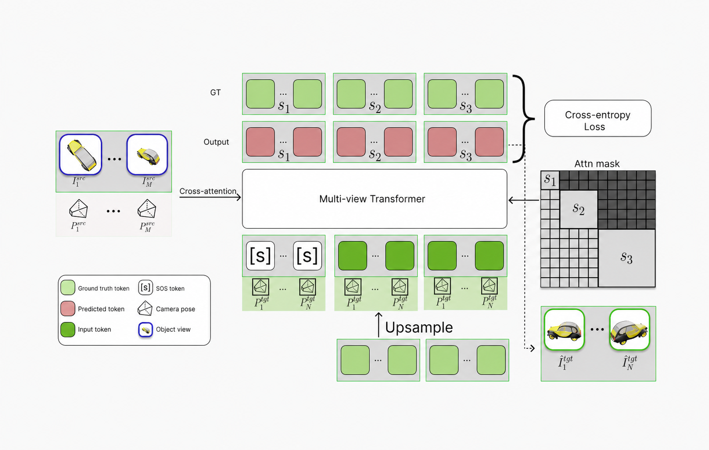
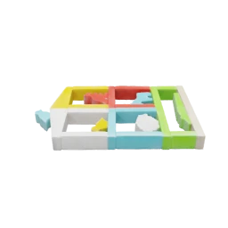
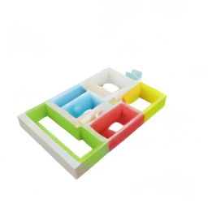
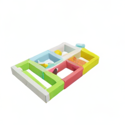
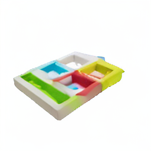
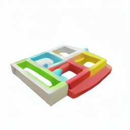
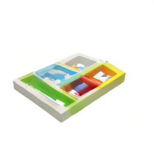
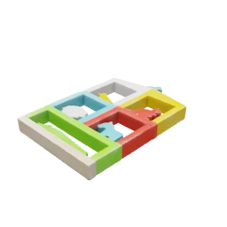
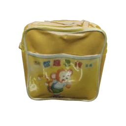
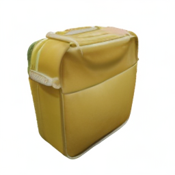

How it works
NAMVIS encodes source views and their camera poses, then generates target-view tokens coarse-to-fine.

Multi-scale ProPE
Projective pose encoding is applied at every generation scale, keeping predictions tied to the target camera geometry.
Two-path conditioning
A pooled source representation controls global semantics, while dense cross-attention preserves appearance details from the input views.
Comparison with prior methods
All methods are evaluated on the same source observations and target camera for direct visual comparison.









Quantitative comparison
Better perceptual quality and faster inference
| Method | PSNR ↑ | LPIPS ↓ | Time ↓ |
|---|---|---|---|
| Zero-1-to-3 | 16.935 | 0.209 | 2.6s |
| Zero-1-to-3-XL | 17.199 | 0.194 | 2.6s |
| SyncDreamer | 17.698 | 0.203 | 16.6s |
| EscherNet | 18.574 | 0.157 | 2.1s |
| NAMVIS 1B | 21.766 | 0.102 | 0.6s |
PSNR and LPIPS are averaged across Objaverse, GSO, and OO3D. Inference times are shown as reported in the full results.
Full quantitative results
| Method | Objaverse | GSO | OO3D | Time | ||||||
|---|---|---|---|---|---|---|---|---|---|---|
| PSNR | SSIM | LPIPS | PSNR | SSIM | LPIPS | PSNR | SSIM | LPIPS | ||
| Zero-1-to-3 | 19.097 | 0.816 | 0.152 | 15.614 | 0.749 | 0.257 | 16.094 | 0.768 | 0.219 | 2.6s |
| Zero-1-to-3-XL | 19.341 | 0.827 | 0.136 | 15.936 | 0.747 | 0.236 | 16.320 | 0.767 | 0.209 | 2.6s |
| SyncDreamer | 19.368 | 0.826 | 0.156 | 16.961 | 0.781 | 0.246 | 16.766 | 0.793 | 0.207 | 16.6s |
| EscherNet | 19.078 | 0.816 | 0.147 | 18.878 | 0.799 | 0.156 | 17.767 | 0.780 | 0.167 | 2.1s |
| NAMVIS 1B | 22.485 | 0.861 | 0.091 | 21.715 | 0.843 | 0.111 | 21.098 | 0.845 | 0.104 | 0.6s |
Results are averaged over nine source-target configurations: 1-to-1, 1-to-2, 1-to-3, 2-to-1, 2-to-2, 2-to-3, 3-to-1, 3-to-2, and 3-to-3 at 256 x 256 resolution.